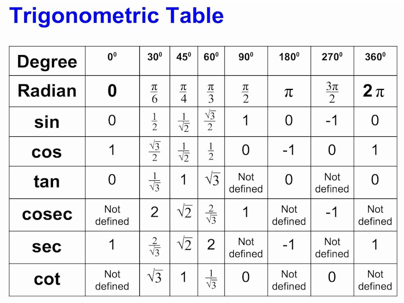
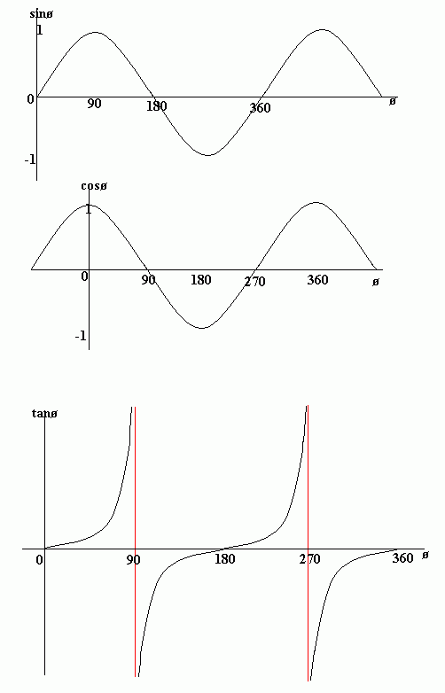
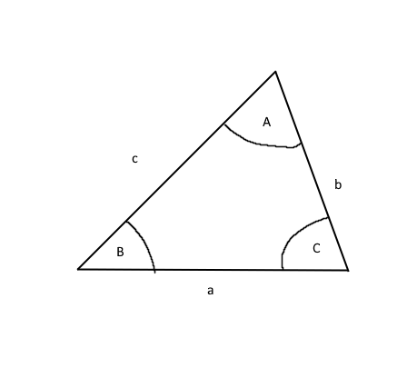

In this lesson, we will explore the concept of trigonometry in mathematics.

In order is y=sin(x), y=cos(x), and y=tan(x).

• Sin and Cos repeat every 360°, while tan repeats roughly every 180° (but not exactly as the lines do not touch the asympototes).
• The graph of Cos the same as the graph of sin though it is shifted 90° to the right/ left. For this reason sinx = cos(90 - x) and cosx = sin(90 - x).
• These graphs obey the usual laws of graph transformations.
The sine rule is a rule relating to the sides and angles of any triangle.
If a, b, and c, are the lengths of the sides opposite the angles A, B, and C in a triangle, then:

To find a length of this triangle with the sine rule, you can use:
| a | = | b | = | c |
|---|---|---|---|---|
| sinA | sinB | sinC |
To find an angle of this triangle with the sine rule, you can use
| sinA | = | sinB | = | sinC |
|---|---|---|---|---|
| a | b | c |
The cos rule is similar to the sine rule, except while the sine rule is used when you have two angles and a side or vice versa.
You use the cos rule when you have every side and are looking for an angle.
Cosine equation is written as:
c2 = a2 + b2 - 2abcos(C)
or
a2 = b2 + c2 - 2bccos(a)
You should know the default formula for the area of a triangle is 1/2base x height.
However, if you are using trigonometry, you likely do not have the height of the triangle. So to find the area of any triangle, use 1/2absin(C).